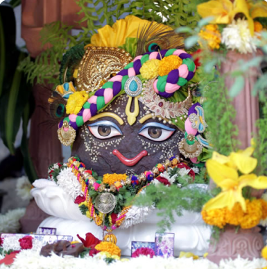

<section class="govardhan">

  <div class="container">

    <div class="about-govardhan d-md-flex">

      <figure class="govardhan-img">
        
      </figure>


      <div class="govardhan-pooja">
        <h5>Govardhan</h5>
        <p>Within the Vrindavan forest is the holy mountain of Govardhana. Govardhana was burn from Krishna heart in
          Goloka when Śrī Radha desired supremely beautiful arena for Their pastimes. He is known as the best servant of
          Krishna for he provides the most wonderful playground for the Lord and His devotees. Govardhana offers
          limitless pleasure for the cows, the gopas and the gopis. When Krishna was hardly seven years old, He lifted
          Govardhana like an umbrella and held it for seven days to protect the Vrajavasis from rain born from Indira’s
          anger.</p>
        <p>Since time immemorial, devotees circumambulate the Govardhana I will as an act of worship.</p>
      </div>
    </div>

    <div class="govardhan-place">

      <h4>
        Govardhan
      </h4>
      <ul class="govardhan-place-list">
        <li *ngFor="let item of goverdhan_place">
          <h5>{{item.PlaceName}}</h5>
          <p>{{item.About_Place}}</p>
        </li>
      </ul>

    </div>


  </div>

</section>
